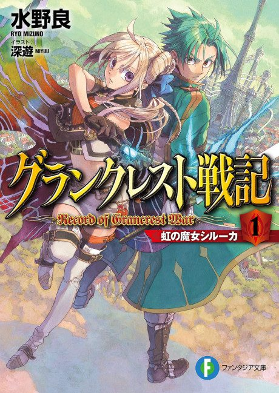

Record of Grancrest War
グランクレスト戦記
Siluca, a mage, chooses to serve Theo, a young knight, to unite a continent torn by war.
We haven't found where the anime ends in the light novel yet.
6.9AniList score
—Animeter, no votes yet
24episodes
Rate it or report where you stopped
Anime finished. Where does the story go next?
StatusNo source yet
We looked for where the anime ends in the light novel but found no source we trust yet. The light novel is 46 chapters, finished.
More like Record of Grancrest War
 Manga Ch. 337.7
Manga Ch. 337.7
 Own end7.1
Own end7.1
 Manga Vol. 117.8
Manga Vol. 117.8
 Manga Vol. 157.6
Manga Vol. 157.6
 Manga Ch. 1018.7
Manga Ch. 1018.7
 Original8.6
Original8.6
 Original8.5
Original8.5
 Original7.6
Original7.6
 Manga Ch. 3408.9
Manga Ch. 3408.9
 Done7.6
Done7.6
 Unclear7.4
Unclear7.4
 Manga Ch. 357.3
Manga Ch. 357.3